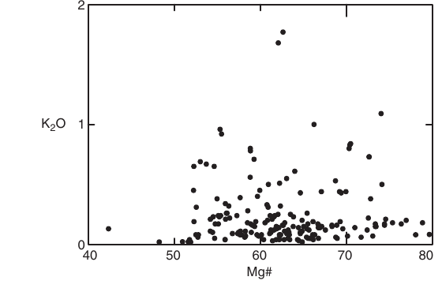
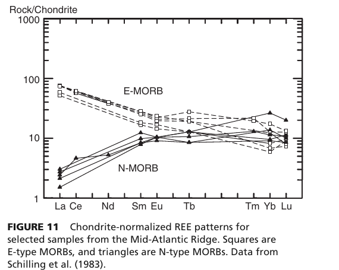
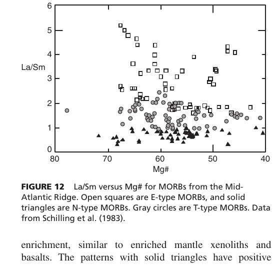
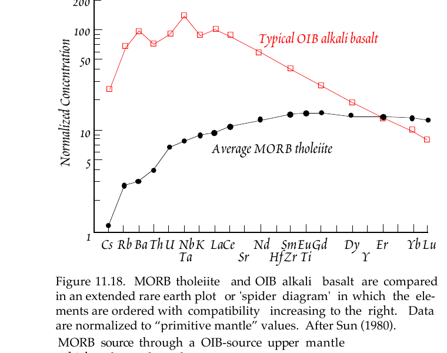
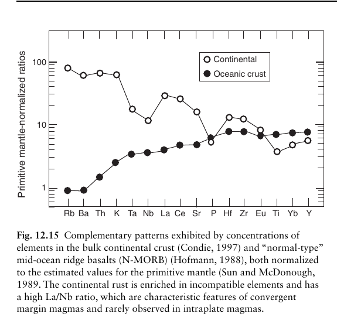
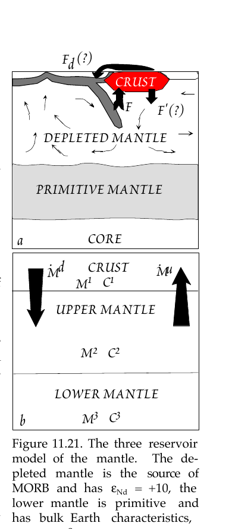
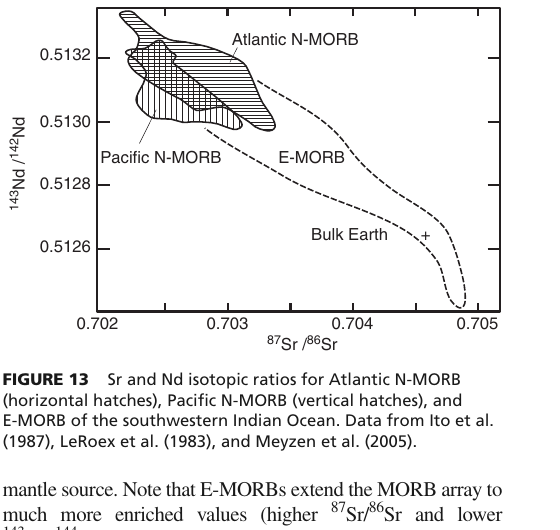
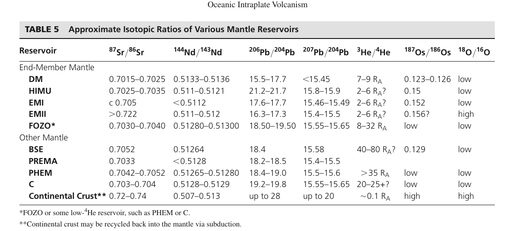
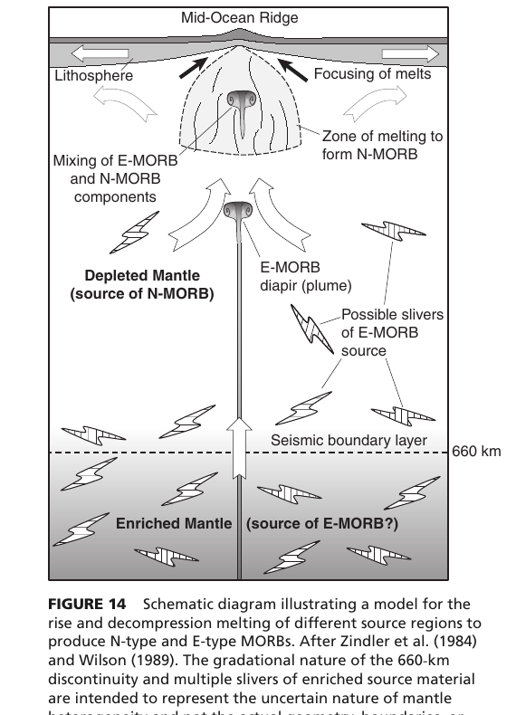

Question 25 examines the foundational petrogenetic classification of Mid-Oceanic Ridge Basalts (MORB) and the chemical heterogeneity of the sub-oceanic upper mantle. The global ocean ridge system produces the largest volume of magma on Earth (~21 km³/yr), yet these basalts are not chemically uniform:
Mid-ocean ridges represent the divergent boundaries where oceanic lithosphere is created by the upwelling and partial melting of the underlying asthenospheric mantle. Oceanic crust is structured into a classic stratified sequence (recognized on land as ophiolites): Layer 1 (pelagic sediment), Layer 2A (pillow basalts), Layer 2B (sheeted dolerite dikes), Layer 3A (isotropic and foliated gabbros), and Layer 3B (layered gabbroic cumulates), underlain by residual mantle peridotite (harzburgite and depleted lherzolite).
Because near-surface fractional crystallization modifies the concentrations of major oxides (reducing MgO, raising FeO, and concentrating incompatible elements), petrologists evaluate mantle source variations by comparing primitive samples with equal Mg# [where Mg# = 100 × Mg / (Mg + Fe²⁺)] or by using trace element ratios and radiogenic isotopes that do not fractionate during crystal removal.
When primitive MORBs with similar Mg# are compared along ridge segments, substantial differences in incompatible elements (K, Ti, P, LREE) become immediately apparent. This proves that the sub-oceanic mantle is not a single, homogeneous reservoir:

The Rare Earth Elements (REEs, Lanthanides: La to Lu) exhibit progressive decreases in ionic radii from La³⁺ (largest, most incompatible) to Lu³⁺ (smallest, least incompatible). Therefore, chondrite-normalized REE diagrams provide an unmistakable fingerprint of mantle source depletion:


When trace elements are arranged on an extended rare earth diagram (spidergram) in order of increasing compatibility during mantle melting (from Cs, Rb, Ba, Th, U on the far left to Y, Yb, Lu on the far right), the incompatible element depletion of MORB is remarkably clear.

Why is the upper mantle depleted in incompatible elements? The definitive geochemical answer was articulated by Albrecht Hofmann (1988): the Depleted MORB Mantle (DMM) is the complementary residue left behind by the extraction of the Earth's continental crust.


Because radiogenic isotopic ratios (e.g., ⁸⁷Sr/⁸⁶Sr, ¹⁴³Nd/¹⁴⁴Nd) do not change during partial melting or fractional crystallization, they reflect the time-integrated parent/daughter ratio of the mantle source over hundreds of millions of years:


Melting beneath mid-ocean ridges is driven by adiabatic decompression of upwelling mantle peridotite (lherzolite/harzburgite). Because the dry peridotite solidus has a steeper dP/dT slope than the mantle adiabat (~0.3°C/km), upward flow causes the mantle to cross its solidus at depths of ~60–80 km (P ≈ 1.5–2.5 GPa):

Melting proceeds by incremental polybaric near-fractional melting, where small melt fractions (~1%) segregate continuously as the mantle rises through a triangular melting regime (Langmuir et al., 1992), focusing into the axial magma chamber to form the oceanic crust.
Option (d) in the question refers to VAB (Volcanic Arc Basalts). It is essential to recognize that VABs are completely distinct from Mid-Ocean Ridge Basalts in tectonic regime, melting mechanism, and geochemical signature:
Q.25. Which one of the following Mid-Oceanic Ridge Basalts (MORB) is derived from an incompatible element-poor mantle?
Screenshot from 2026-10-12 23-14-41.png.
Why it is correct: "N" stands for Normal. N-MORB constitutes the vast majority (~85%) of volcanic rock generated along oceanic spreading ridges globally. It is derived by adiabatic decompression partial melting of the Depleted MORB Mantle (DMM)—the convecting upper asthenospheric mantle above ~660 km depth.
Winter (2010, p. 300) explicitly writes: "We can thus distinguish between N-MORB ('normal' MORB), which taps the depleted, or incompatible-poor mantle, and E-MORB ('enriched' MORB, also called P-MORB for 'plume'), which taps an incompatible-richer mantle." Thus, (a) is unequivocally the correct answer.
Why it is incorrect: "P" stands for Plume (also termed E-MORB for Enriched MORB). P-MORBs occur along ridge segments that are situated near or directly influenced by deep-seated mantle plumes and hotspots (e.g., the Mid-Atlantic Ridge near Iceland, the Azores, or Tristan da Cunha, and the Galapagos Spreading Center).
P-MORBs are derived from an incompatible element-rich (fertile or metasomatized) mantle source, not an incompatible element-poor mantle. They have elevated concentrations of K₂O (>0.10 wt.%), TiO₂ (>1.0 wt.%), P₂O₅, and enriched LREE profiles with negative slopes where (La/Sm)N > 1.8. Their radiogenic isotopes plot toward enriched reservoirs (higher ⁸⁷Sr/⁸⁶Sr ~ 0.7030–0.7045 and lower ¹⁴³Nd/¹⁴⁴Nd). Therefore, P-MORB represents the opposite of an incompatible element-poor melt.
Why it is incorrect: "T" stands for Transitional. T-MORBs exhibit geochemical characteristics intermediate between N-MORB and E-MORB/P-MORB, with (La/Sm)N ratios typically ranging between 0.8 and 1.8.
As documented by Schilling et al. (1983) and Winter (2010, p. 301), chemical and isotopic data demonstrate that T-MORBs do not represent a unique, distinct third mantle layer, but are formed by the mixing of depleted N-MORB melts with enriched E-MORB plume melts during magma ascent and storage in axial magma chambers. Because T-MORBs involve significant contributions from the enriched mantle component, they are not derived from a purely incompatible element-poor mantle source.
Why it is incorrect: VAB stands for Volcanic Arc Basalts. This option is a double category error:
| Geochemical Class | Mantle Source Reservoir | (La/Sm)N | REE Slope | K₂O (wt.% at Mg# 65) | ⁸⁷Sr/⁸⁶Sr | ¹⁴³Nd/¹⁴⁴Nd | Tectonic Setting |
|---|---|---|---|---|---|---|---|
| N-MORB (Normal) | DMM (Depleted MORB Mantle) | < 1.0 (0.4–0.8) | Positive (LREE depleted) | < 0.10 | 0.7020 – 0.7028 | > 0.5131 (εNd +10 to +12) | Spreading ridges away from plumes |
| T-MORB (Transitional) | Hybrid / Mixed (DMM + Enriched Plume) | 0.8 – 1.8 | Flat to slightly sloped | 0.10 – 0.25 | 0.7027 – 0.7032 | 0.5129 – 0.5131 (εNd +6 to +9) | Transition zones along ridge axes |
| E-MORB / P-MORB (Enriched / Plume) | Enriched Mantle / Plume Diapir | > 1.8 (up to 5.0) | Negative (LREE enriched) | > 0.15 (up to 1.5) | 0.7030 – 0.7045 | 0.5127 – 0.5129 (εNd +2 to +6) | Ridge-plume intersections (Iceland, Azores) |
| OIB (Ocean Island Basalt) | Deep Plumes (HIMU, EMI, EMII, FOZO) | > 2.0 (up to 10.0) | Steep negative | 0.5 – 3.5 | 0.7030 – 0.7070+ | 0.5124 – 0.5130 (εNd -2 to +8) | Intraplate oceanic hotspots (Hawaii, Samoa) |
| VAB (Volcanic Arc Basalt) | Subduction-fluid fluxed mantle wedge | Variable (high LILE/HFSE) | Negative Nb-Ta anomaly | 0.3 – 2.0 | 0.7035 – 0.7060+ | 0.5127 – 0.5130 | Convergent subduction boundaries |
| Reservoir Code | Full Name | ⁸⁷Sr/⁸⁶Sr | ¹⁴³Nd/¹⁴⁴Nd | Proposed Petrogenetic Origin & Significance |
|---|---|---|---|---|
| DMM (DM) | Depleted MORB Mantle | 0.7015 – 0.7025 | 0.5133 – 0.5136 | Residue left after extraction of the continental crust; source of N-MORB. |
| BSE (PM) | Bulk Silicate Earth / Primitive Mantle | ~0.7045 – 0.7052 | 0.51264 (εNd = 0) | Theoretical pristine composition of the silicate Earth before crust-mantle differentiation. |
| HIMU | High-µ (High ²³⁸U/²⁰⁴Pb) | 0.7028 – 0.7035 | 0.5128 – 0.5130 | Subducted ancient altered oceanic crust where hydrothermal alteration removed Pb relative to U. |
| EMI | Enriched Mantle Type I | ~0.7050 | < 0.5124 | Recycled pelagic sediments or subcontinental lithospheric mantle (SCLM) delamination. |
| EMII | Enriched Mantle Type II | > 0.7070 | 0.5120 – 0.5124 | Recycled upper continental crust or terrigenous sediments carrying high Rb/Sr. |
| FOZO / PREMA | Focal Zone / Prevalent Mantle | 0.7030 – 0.7040 | 0.5128 – 0.5130 | Ubiquitous common mixing component in deep mantle plumes. |
| Ratio | N-MORB | E-MORB | OIB | Volcanic Arc Basalts (VAB) | Continental Crust |
|---|---|---|---|---|---|
| (La/Sm)N | < 1.0 (0.4–0.8) | > 1.8 | > 2.5 | Variable (1.2–3.0) | 3.0 – 5.0 |
| Nb / U | 47 ± 10 | 47 ± 10 | 47 ± 10 | < 10 (pronounced deficit) | ~10 |
| Ce / Pb | 25 ± 5 | 25 ± 5 | 25 ± 5 | < 5 (Pb enrichment) | ~4 |
| Zr / Nb | > 30 (typically 30–50) | 10 – 20 | < 10 (typically 4–8) | Variable | ~10 |
| Ba / Nb | < 5 | ~8 | ~10 | > 30 (up to 100+) | ~50 |